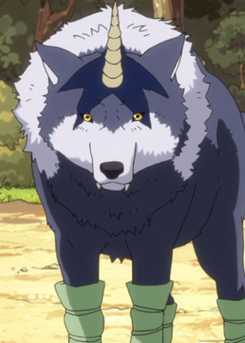

Chikahiro Kobayashi is a voice actor. He is known for his role of Saichi Sugimoto in Golden Kamuy.
- Gender: Male
- Birthday: September 5, 1983
- Hometown: Aichi, Japan
- Hobbies: Horse Riding

|
|---|
| |
Chikahiro Kobayashi is a voice actor. He is known for his role of Saichi Sugimoto in Golden Kamuy.
|
|
|---|
 |
Bruno Bangyfe | Burn the Witch | Bruno Bangyfe is the Director of the Inks division of Wing Bind. He is a fierce and temperamentalyoung man who is commited to upholding the safety provided by Wing Bind. Along with, he is intolerant of those who lack professionalism. Bruno values recognition and fame, going as far as being personally offend by anyone who does not know him. In combat, Bruno is sarcastic, unempathetic, cunning and manipulative. |
|  | Ranga | That Time I Got Reincarnated as a Slime | Ranga is an extremely loving and loyal subordinate of Rimuru. His mainly resides in his shadow, absorbing his energy for his own growth. Ranga is a very proud monster. He is eilling to give everything including his own life for Rimuru's happiness. He is very blunt with outsiders. |
Go Back to Main Page |
Go Back to Homepage |
|
|
|
OR |
|